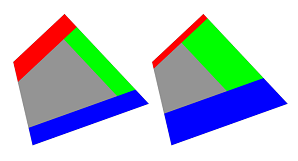
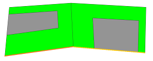
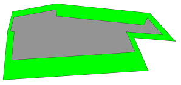
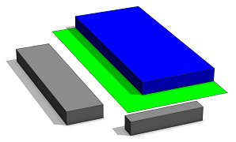
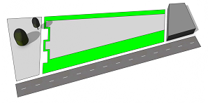
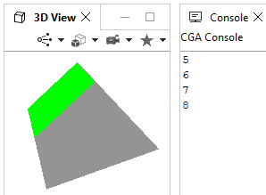

setbackPerEdge operation
distance float An expression that specifies the setback distance. It is evaluated per face edge.
uvSet, selector, operator, operations All other parameters are the same as for the setback operation.
The setbackPerEdge operation is similar to the setback operation. The only difference is that the setback distance is evaluated several times and individually for each face edge. Shared edges are considered separately for each face. Therefore, a different distance can be set for each edge.
At the time distance is evaluated the current shape equals to one of the respective face edge components. More precisely, the current geometry, pivot and scope equals to the face edge component of the comp operation (with the compSelector set to fe). Furthermore comp attributes can be accessed.
Related
Examples
setback vs. setbackPerEdge

Lot1 --> setback(rand(5))
{ front = Red | back = Blue | left = Green }
Lot2 --> setbackPerEdge(rand(5))
{ front = Red | back = Blue | left = Green }
This simple example illustrates the difference between setback and setbackPerEdge. While for setback the distance is evaluated once and assigned the same for all edges, setbackPerEdge re-evaluates the distance for each edge.
Using comp shape attributes

const dists = [3,2,1,0,0,1,2,3]
dist = dists[comp.index]
Lot --> setbackPerEdge(dist) { all = Green }
The comp.index attribute is used to extract the distance from an ordered float array. Note that indexing is done in face-edge order (first edges are highlighted in orange). The first distance is applied on the first edge of the first face (left) and the 5th distance is applied on the first edge of the second face (right). Also note that dist is a function that is evaluated several times. If dist was an attr or const it would only be evaluated once at rule start with comp.index being -1. The same result can be achieved by
Lot --> setback(comp(fe){all:dist}) { all = Green }
Lot --> setback(dists) { all = Green }
Using comp shape geometry

Lot --> setbackPerEdge(scope.sx / 7.5) { all = Green }
Setbacks are applied relative to edge lengths.

dist = case minimumDistance(inter, "Block") < 3 : 2
else : 0
Lot1 --> setbackPerEdge(dist)
{ all = Green | remainder = extrude(1) Blue }
Also context and occlusion queries can be used to specify distances.

dist(orientation) = case orientation == "park" : 1
case orientation == "street" : 7
case orientation == "lot" : 0
case orientation == "back" : 3
else : 0
dist = dist(edgeAttr.getString("orientations"))
Lot --> setbackPerEdge(dist) { all = Green }
In this example edge attributes are sampled and used to set distances.
setbackPerEdge as setback

debug = print(comp.index+5)
Lot --> setbackPerEdge(debug) { front = Green }
This example illustrates the fact that setbackPerEdge internally evaluates the distance for each edge, constructs an array and passes it to setback. Although only one edge is selected by the front selector the debug function is evaluated 4 times, once for each edge.